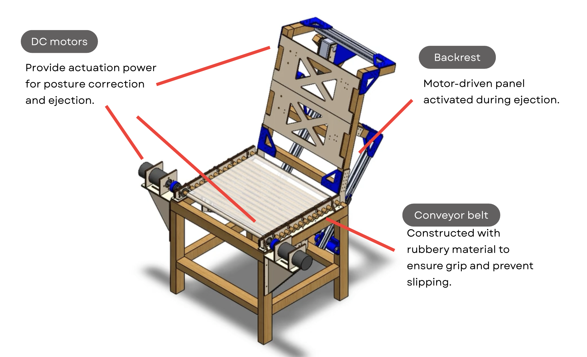

Interactive Focus Chair
phone detection • posture correction
OVERVIEW
- Designed the chair to address two issues: smartphone overuse and poor sitting posture.
- Implemented a custom-trained convolutional neural network (CNN) for real-time phone use detection to encourage focused work and reduce distractions.
- Integrated MediaPipe-based posture detection to monitor sitting ergonomics and provide corrective feedback.
DESIGNS
HOW IT WORKS
When MediaPipe detects an excessive sitting angle that indicates poor posture, the conveyor belt automatically moves backward, gently pulling the user back into a proper position.
HOW IT WORKS
When the custom CNN recognizes phone use, the chair activates the backrest and conveyor system to eject the user from the chair, to discourage distractions.
DEMO VIDEO
SUMMARY & RECOGNITION
- Addressed smartphone overuse and poor posture using a custom CNN for phone use detection and MediaPipe for posture monitoring.
- The prototype demonstrated corrective feedback and deterred distractions.
- Received the Best Popularity Award.